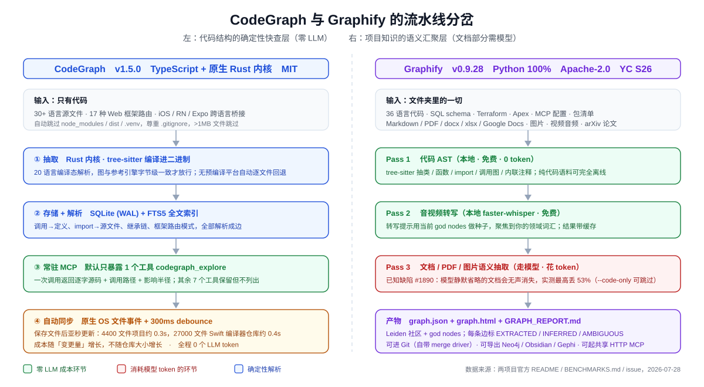
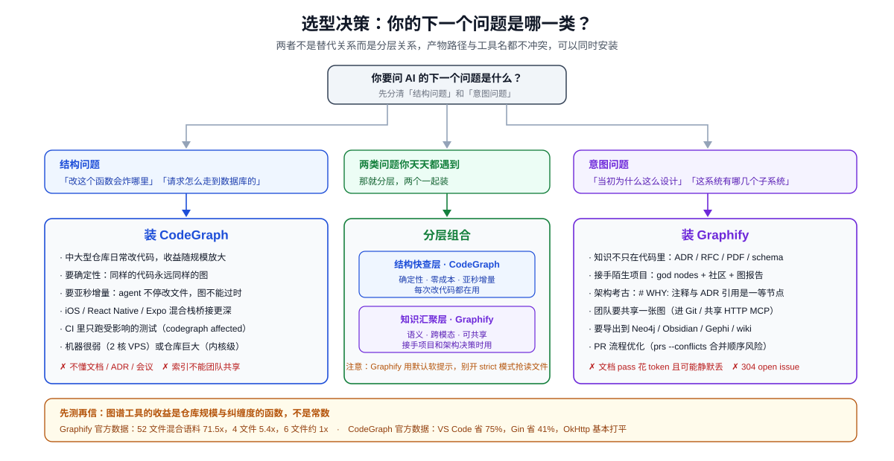

两个代码知识图谱的分岔路：CodeGraph 押注 Rust 性能，Graphify 押注全语料语义
序言：同一个痛点，长出了两棵不一样的树
2026 年 5 月，我们写过一篇 CodeGraph 深度评测。那时它 31.2k 星、v0.9.6 Beta、GitHub Trending 月榜第一。文章的结论很简单：AI 编码工具把太多钱花在"找代码"上，而一个预索引的本地图谱能把这笔钱省下来。
两个月过去，两件事同时发生了。
第一件事：CodeGraph 自己往前跑了一大截——62.9k 星（翻倍），版本从 v0.9.6 Beta 干到 v1.5.0，解析引擎整个换成了原生 Rust 内核。它在 2 核 6GB 的 VPS 上把 Linux 内核（7 万文件、200 万符号、640 万关系）索引到底，用了不到 12 分钟。同期的 benchmark 重测数据也从"省 35% 费用"跳到了"省 60% 费用、减 69% token、减 89% 工具调用，7 个测试仓库文件读取全部为 0"。
第二件事：一个叫 Graphify 的项目从后面追上来，然后越过去了——97.3k 星、9.4k fork、192 位贡献者、174 个 release，公司 Graphify Labs 进了 YC S26 批次。
如果只看这两个数字，你会以为这是一场"后浪拍前浪"的替代故事。但把两个项目的 README、BENCHMARKS.md、issue 列表和源码结构都翻完之后，我的结论恰恰相反：
它们看起来在解同一个问题，实际上已经走到了两条不同的路上。CodeGraph 在把"代码结构的确定性快查"这件事做到物理极限；Graphify 在把"整个项目的知识"（代码之外的文档、PDF、会议、schema）汇聚成一张可遍历的语义图。硬比谁强，是个伪问题。
这篇文章拆的就是这个分岔口——它在技术上具体分在哪里、两家的 benchmark 各自能证明什么和不能证明什么、各自的风险清单是什么，以及一个正在天天用 AI 写代码的人到底该怎么选。
一、Graphify 的来路：一条 Karpathy 推文的 48 小时
要理解 Graphify 为什么长成现在这样，得先知道它是怎么来的——它的起点根本不是一个代码工具。
2026 年 4 月 1 日，Andrej Karpathy（OpenAI 联合创始人、前特斯拉 AI 总监）在 X 上描述了一个他想要但没有的工作流。他有个叫 /raw 的文件夹，论文、推文、截图、手写笔记、白板照片全往里丢，然后他想要一个能跨这一切查询、而不必读每个文件的东西。配套的 GitHub Gist 标题就叫 "LLM Wiki"，核心比喻是把原始资料当源码、把 wiki 当编译产物：
知识被编译一次然后保持更新，而不是每次查询时重新推导。
48 小时后，Safi Shamsi 把 Graphify 发在了 GitHub 上，初版日期 2026 年 4 月 3 日。
这个响应速度不是运气。Shamsi 是常驻伦敦的 AI 工程师，伯明翰大学数据科学硕士（Distinction），而他的硕士论文做的就是"基于知识图谱的混合 RAG 用于学术检索"；创业前在 Valent 做 AI 工程师，方向是知识图谱、检索增强生成、可解释 AI 和多模态深度学习。也就是说，Karpathy 描述的那个概念，恰好落在他已经系统训练过的技术区间里——他不需要想清楚要做什么，只需要把已有的知识翻译成代码。
之后的增长曲线相当极端：
- 发布 10 天：22,000 stars
- 2026 年 6 月：58,300 stars、6,100 forks、120 万 PyPI 下载
- 2026 年 7 月初：83,000 stars、v0.9.13、1,079+ commits、240 万下载、77 位贡献者
- 2026 年 7 月 28 日（今天）：97,300 stars、v0.9.28、174 个 release、192 位贡献者
节奏大约是每两天一个 release。中途进了 YC S26 批次，周末项目变成了公司 Graphify Labs，企业产品层取名 Penpax——把同样的本地图谱方法扩展到用户的整个工作生活：会议、邮件、浏览历史、工作文件。据报道，Graphify Labs 在 2026 年中期称有 21 家 Fortune 500 公司在其企业管道中。
这段来路解释了本文后面的三个观察，所以值得单独讲：
第一，它解释了范围差异的根源。 Graphify 的祖先是 Karpathy 那个装着论文和白板照片的 /raw 文件夹，代码是后来才成为主战场的。CodeGraph 从第一行就是代码工具（2026 年 1 月上线）。所以"一边只吃代码、一边什么都吃"不是两个团队的产品决策分歧，是出身不同。Graphify 至今仍能 graphify add <arxiv-url> 把一篇论文拉进图里，这个功能在一个纯代码工具的路线图上根本不会出现。
第二，它解释了那套置信度标注为什么存在。 作者的学术训练就在"知识图谱 + 混合 RAG"上，而给检索结果分层标注可信度是那个领域的标准动作，不是产品经理拍出来的功能。这也是为什么它做得比一般工程实现细致（离散量规、逐条标注、报告里单列 AMBIGUOUS）。
第三，它也解释了 304 个 open issue。 48 小时从零到发布、之后每两天一个 release、三个月冲到 8 万星——这个速度不可能不欠技术债。我们在第五节会看到具体债务长什么样。
顺便一个有意思的呼应：Karpathy 那个 gist 的核心比喻是"编译"，而 Graphify 的早期传播里最出圈的一句自我定位正是"它是个编译器，不是检索系统"。RAG 把代码切块、嵌入、查询时检索，每个会话重读同一批文件；Graphify 把结构编译一次，之后查图。这个框架是从 Karpathy 那条推文里直接继承的。
📌 关于这段历史的可靠性：起源时间线主要整理自 Learn AI 社区维基的 Graphify 条目（Miraheze 托管，CC BY-SA 4.0）。这是社区编纂内容而非权威一手来源，但"Karpathy 4 月 1 日发帖、48 小时后 Graphify 发布"这条已被多家独立报道交叉印证，Karpathy 的 gist 本身也是公开可查的。需要注意该维基页面最后编辑于 2026 年 7 月 13 日，所以里面"MIT 许可证""83,000 stars"这些数据已经过时（7 月 22 日已改 Apache-2.0，星数已到 97.3k），文中涉及现状的数字均以仓库当前状态为准。
二、两个项目的当前坐标
先把事实摊平。以下数据抓取自 2026 年 7 月 28 日的仓库页面。
| 维度 | CodeGraph | Graphify |
|---|---|---|
| 仓库 | colbymchenry/codegraph | Graphify-Labs/graphify |
| Stars / Forks | 62.9k / 3.9k | 97.3k / 9.4k |
| Contributors | 49 | 192 |
| Release 数 | 30（v1.5.0） | 174（v0.9.28） |
| 实现语言 | TypeScript + 原生 Rust kernel | Python 100% |
| 存储 | SQLite + FTS5 全文索引 | NetworkX node-link graph.json |
| 许可证 | MIT | Apache-2.0（7 月 22 日刚从 MIT 改） |
| 分发 | 一行安装脚本 / npm @colbymchenry/codegraph |
PyPI graphifyy（双 y）/ uv tool install |
| 主要交付形态 | MCP Server（常驻） | Skill（/graphify，产出文件），MCP 可选 |
| Open issues / PRs | 118 / 244 | 304 / 376 |
| 商业化 | getcodegraph.com 内测 waitlist | graphify.com 企业版 waitlist，YC S26 |
Star 数上 Graphify 领先 55%，但这两个数字不完全可比——Graphify 的传播节奏是"每天一个 release + 大量社交媒体二次创作"，augmentcode.com 一家站点就在两个月里写了六篇不同 star 数节点的稿子（58.3k、63.2k、68.9k、74.8k、79.5k、97.1k）。CodeGraph 走的是相对安静的工程路线。星标能说明关注度，不能说明工程质量，这一点我们后面用具体数据说。
三、分岔口在哪：范围、形态、成本三个维度同时分开

3.1 范围：代码图 vs 全语料图
这是最根本的一条分界线。
CodeGraph 只处理代码。 30+ 种语言的源文件，抽出函数、类、方法作为节点，调用、导入、继承、实现作为边，再加上 17 种 Web 框架的路由识别和 iOS / React Native 的跨语言桥接。你的 ADR 文档、需求文档、数据库设计说明、会议纪要，它一概不看。
Graphify 处理你项目文件夹里的一切。 它的文件清单长得离谱：
- 代码：36 个 tree-sitter 语法，覆盖
.py .ts .go .rs .java .swift .kt .zig .ex .jl .dm .f90 .pas等等 - 基础设施：Terraform / HCL、Salesforce Apex、SQL（表、视图、外键、JOIN 关系都确定性抽取）
- 配置元数据：
.mcp.json等 MCP 配置（抽出 server 节点、包引用、环境变量需求）、pyproject.toml/go.mod/pom.xml包清单（同名包在多处引用时收敛成一个 hub 节点） - 文档：Markdown（
[text](./other.md)链接和[[wikilinks]]变成 references 边）、reST、HTML、YAML - 办公文件：
.docx/.xlsx，以及 Google Docs / Sheets / Slides（需gwsCLI 授权） - PDF、图片（
.png .jpg .webp .gif） - 视频音频：本地 faster-whisper 转写，甚至能
graphify add <youtube-url>把一个视频拉进图里 - 论文：
graphify add https://arxiv.org/abs/1706.03762直接抓下来入图
差别不在"支持的文件类型多"这种功能表层面。差别在图的语义层级。CodeGraph 的图上，节点是符号，边是编译器意义上的关系。Graphify 的图上，节点可以是一个概念、一段设计理由、一篇论文里的一个方法，边可以是 semantically_similar_to。它还会专门把 # NOTE: / # WHY: / # HACK: 这类注释和 ADR / RFC 引用提成一等公民节点，链回它们解释的代码——这就是 CodeGraph 结构上不可能表达的东西："这段代码为什么长这样"。
3.2 形态：常驻 MCP vs 一次性产物
CodeGraph 是个常驻进程。 codegraph install 把 MCP server 写进你 8 个 agent 的配置（Claude Code、Cursor、Codex CLI、opencode、Hermes Agent、Gemini CLI、Antigravity IDE、Kiro），codegraph init 建索引，然后它就消失在背景里了。文件监听用原生 OS 事件（FSEvents / inotify / ReadDirectoryChangesW），300ms debounce，保存一个文件后亚秒级增量更新。你不需要再运行任何命令。
这里有个值得单独讲的设计变化：v1.5 把默认暴露的 MCP 工具从 10 个砍到了 1 个。
我们 5 月那篇文章列了 CodeGraph 的十个工具（search / context / trace / callers / callees / impact / explore / files / node / status）。现在默认只暴露 codegraph_explore 一个，其余全部保留但不列出，要靠 CODEGRAPH_MCP_TOOLS=explore,node,search,callers 环境变量手动打开。官方给的理由很有意思：
实测 agent 行为显示，一个强工具比一堆窄工具更能引导 agent——更少选错，而且每个会话都省 context。
这是个反直觉但很对的判断。给 agent 十个工具，它会在选择上浪费 token 和判断力；给它一个能一次返回"相关符号的逐字源码 + 调用路径 + 影响半径"的工具，它就直接答题了。做 MCP server 的人应该抄这个设计。
Graphify 是个 Skill，产出三个文件。 你在 AI 助手里敲 /graphify .，它跑完给你：
graph.html— 浏览器打开就是力导向图，能点节点、筛选、搜索，社区用颜色区分GRAPH_REPORT.md— 人读的报告：god nodes、意外连接、"为什么"、4-5 个图能独家回答的建议问题graph.json— 完整图，之后所有查询都打这个文件，不再读源文件
查询走 CLI：graphify query "什么把 auth 和数据库连起来了"、graphify path "UserService" "DatabasePool"、graphify explain "RateLimiter"。
它也可以变成 MCP server（python -m graphify.serve，暴露 query_graph / get_node / get_neighbors / shortest_path / list_prs / get_pr_impact / triage_prs），但这是可选路径，不是默认姿势。想理解 MCP 这类协议在 agent 生态里的位置，可以看 MCP vs A2A 协议深度解析。
形态差异带来一个很实际的后果：Graphify 的图是文件，所以能进 Git。
3.3 成本：一边是纯粹零成本，一边是分段计费
CodeGraph 全程零 LLM 花费。 纯 tree-sitter 解析 + SQLite 存储 + 引用解析，没有 API key，没有外部服务，没有一个 token 花在建图上。
Graphify 是分段的，这一点很多二次传播的文章讲糊了：
- 代码部分零成本：tree-sitter AST，确定性，本地，不出机器。纯代码语料的话
graphify extract完全离线，Pass 3 整个跳过。 - 文档 / PDF / 图片部分要花模型 token：走你 IDE session 的模型（用
/graphifyskill 时不需要额外 key），或者 headless 时配一个 backend（Gemini / Claude / OpenAI / DeepSeek / Kimi / Azure / Bedrock / Ollama 都支持，Ollama 全本地）。 - 音视频零成本：本地 faster-whisper。
想只吃免费那部分，加 --code-only。
所以"Graphify 建图零 LLM 花费"这个说法只在纯代码仓库上成立。一旦你把 docs/ 也扫进去——而这恰恰是 Graphify 存在的理由——就开始产生 token 成本了。这不是缺点，是它换范围付的价。
四、两家的 Benchmark：各自证明了什么，各自没证明什么
这一节可能是全文最有价值的部分，因为传播链上被扭曲得最厉害的就是这些数字。
4.1 CodeGraph：7 仓库、7 语言、代码赛道
2026-07-21 用 Claude Opus 4.8 对当前构建（Rust 内核 + 本轮解析大改）重测，7 个真实开源仓库，每组 4 次取中位数，比较"同一个架构问题，有图 vs 无图"：
| 仓库 | 语言 · 规模 | 工具调用 | 时间 | 文件读取 | Token | 成本 |
|---|---|---|---|---|---|---|
| VS Code | TypeScript · ~11k 文件 | 2 vs 40 | 5× 更快（41s vs 3m24s） | 0 vs 17 | 83% 更少 | 75% 更省 |
| Excalidraw | TypeScript · ~640 | 3 vs 55 | 36s vs 23s ¹ | 0 vs 24 | 89% 更少 | 78% 更省 |
| Django | Python · ~3k | 2 vs 29 | 38% 更快 | 0 vs 16 | 78% 更少 | 69% 更省 |
| Tokio | Rust · ~790 | 3 vs 57 | 65% 更快 | 0 vs 15 | 91% 更少 | 86% 更省 |
| OkHttp | Java · ~645 | 1 vs 5 | 10% 更快 | 0 vs 1 | 33% 更少 | 基本打平 ² |
| Gin | Go · ~110 | 3 vs 10 | 57% 更快 | 0 vs 4 | 18% 更少 | 41% 更省 |
| Alamofire | Swift · ~110 | 3 vs 53 | 49s vs 31s ¹ | 0 vs 18 | 90% 更少 | 86% 更省 |
¹ 小仓库地板效应：Opus 4.8 grep 小树够快，wall-clock 能赢，但要多花约 5-10 倍 token、4-7 倍钱。
² OkHttp 的无图组运气好，5 次调用就答上了；有图组 1 次调用，多花约 $0.03。
平均：89% 更少工具调用、60% 更便宜、69% 更少 token、20% 更快。
这套数据的诚实之处：它把自己输的格子标出来了（OkHttp 成本打平、两个小仓库 wall-clock 输），并且主动提醒时间是这几列里噪声最大的指标——wall-clock 受网络延迟、模型当时负载、agent 恰好选了哪条探索路径影响，跑几次能差出一倍，所以"平均快 20%"这个数字别太当真。相比之下 token 数、工具调用次数、文件读取数都是确定性计数，重复跑基本稳定。
文件读取那一列是最硬的——7 个仓库全部为 0，意味着 agent 在有图的情况下一次源文件都没打开过。这个指标没法靠运气刷出来。
这套数据不能证明的：每个仓库只测了一个架构问题。7 个数据点、每个 4 次取中位数，样本小到不足以支撑"你的项目也会省 60%"这个推断。而且它对比的基线是"裸 agent"，不是"其他索引方案"。
4.2 CodeGraph 独有的两块硬数据
比 benchmark 更有说服力的是这两块，因为它们是可审计的能力边界而不是效果宣传。
一是分语言跨文件覆盖率实测。定义很严格："有符号的源文件中，至少有一个被解析出来的跨文件依赖者（import / call / reference / 框架路由）的占比"，每种语言挑一个真实基准仓库测：
| 语言 | 基准仓库 | 覆盖率 |
|---|---|---|
| Python | psf/requests | 100% |
| PHP | guzzle/guzzle | 100% |
| Ruby | sidekiq/sidekiq | 100% |
| Go | gin-gonic/gin | 96.6% |
| Kotlin | square/okhttp | 96.2% |
| TypeScript / JavaScript | 自身仓库 | 95.8% |
| Swift | Alamofire | 95.3% |
| C++ | google/leveldb | 94.8% |
| Java | google/gson | 93.3% |
| C | redis/redis | 92.2% |
| Rust | BurntSushi/ripgrep | 86.7% |
| C# | jbogard/MediatR | 85.2% |
| Lua | telescope.nvim | 84.2% |
| Pascal / Delphi | PascalCoin | 77.4% |
| Liquid | Shopify/dawn | 73.8% |
关键在残差的处理方式：README 明确说残差"永远是真实的静态分析前沿——运行时动态派发、反射 / DI 容器、框架约定入口、vendored 第三方代码，绝不通过操作分母来掩盖"。框架路由也是同样测法：Express 100%、FastAPI 98%、Flask 100%、NestJS 96.8%，而约定和反射重的那几个就老实报天花板——ASP.NET 83.9%、Spring 83.3%、Drupal 78.9%、Play 76.3%、Django 74.1%。
一个愿意公布自己 Django 路由只能覆盖 74% 的项目，比一个只公布 71x 倍数的项目更值得信任。
二是工程性能数据，这是 Rust 内核的直接回报：
- Swift 编译器仓库（27k 文件的 Swift + C++）首次索引约 100 秒，改一个文件重同步 约 4 秒
- Linux 内核（70k 文件、200 万符号、640 万关系）在 2 核 / 6GB 的 VPS 上 12 分钟内索引完成，而"内存优先设计的方案在跑到 1% 之前就 OOM 了"
- 日常保存一个文件，图在远低于 1 秒内更新完（4400 文件项目约 0.3s，27000 文件的 Swift 编译器仓库约 0.4s），只同步变化部分，不重扫全树
- 对比"最快的竞品索引器"的变更重索引：在中大型仓库上快 2-7 倍，跨 31 仓库 30 语言基准，而且仓库越大差距越大，因为对方的成本随仓库增长，它的成本随变更量增长
它还会根据机器实际情况自适应——真实核数（容器 / cgroup 感知，给了 2 核就按 2 核规划而不是按宿主的 64 核）、macOS 和 Linux 上诚实测量的可用内存、以及你项目解析工作的实测成本。这种"在 2 核 VPS 上也要跑完"的工程取向，在这个人人都假设你有 M4 Max 的时代不太常见。
4.3 Graphify：换了赛道的 benchmark
Graphify 的 BENCHMARKS.md（2026-07-05 更新）主战场不是代码，是长期记忆，对手是 mem0 和 supermemory：
| 套件 | 数据集 (n) | 指标 | Graphify | 对照 |
|---|---|---|---|---|
| Memory | LOCOMO (300) | recall@10 | 0.497 | BM25 0.362、supermemory 0.149*、mem0 0.048 |
| Memory | LOCOMO (300) | QA 准确率 | 45.3% | supermemory 49.7%、BM25 31.3%、mem0 27.3% |
| Memory | LongMemEval-S (50) | QA 准确率 | 76% | dense RAG 76%（并列）、hybrid 74%、mem0 70% |
| Cost | LOCOMO 摄入 | USD | ~$1.40 | supermemory $15.67、mem0 $3.48 |
| Cost | 建图 | LLM credits | $0 | — |
* supermemory 的 recall 被 embedder 混淆了——它自托管时锁定自己的 768 维英文 embedder，而不是共享的 BGE-m3。
这套 harness 的方法论确实比同行诚实，几个点值得单独表扬：
- 所有 LLM 角色统一用一个模型（Kimi K2.6 via Moonshot），mem0 和 supermemory 作为 adapter 跑在同一个 harness 里，通过代理让它们的 LLM 调用也走 Kimi
- 共享一个本地 embedder（BGE-m3，1024 维，多语言）
- 评分用"正确答案必须包含的原子关键事实"金标集算覆盖率
coverage = (covered + 0.5 * partial) / total，每个判定都引用答案里的逐字原文，可审计 - 裁判做了盲验：跟第二个独立裁判在抽样集上一致率 90.6%，Cohen's kappa 0.81。README 自己点出"大多数已发表的记忆 benchmark 完全不披露裁判验证，我们把自己的公布出来，让评分本身也能被审计"
这是很正经的实验设计。它也大方承认 supermemory 的 QA 分数比自己高 4.4 个点——但代价是约 11 倍的摄入成本和约 3 倍差的检索召回。
然后是代码智能那一栏，就克制多了。
在 ERPNext（约 100 万行的生产级 Python 仓库）上，给一个固定的编码 agent（Claude Opus 4.8，最多 14 轮，grep/read/list 保底 + 一个代码智能工具）加上 graphify 工具，关键事实覆盖率从 70.8%（grep + read 基线）提到 82.0%，每次查询约 14 万 token。同时它点出了一个真问题：把整个仓库塞进每一轮上下文的做法，大约 20 倍的 token 却换来更低的覆盖率。
注意括号里那个数：n=6。六个问题。这个数字不足以支撑任何强结论，Graphify 自己也没往上加修饰。
它还有个有意思的时序子套件：ERPNext 从 2011 到 2026 的 689 个周度 AST 检查点，全部无 LLM 确定性构建。2011-06-08 是 3069 节点 / 2900 边 / 1032 文件，2026-06-24 是 22620 节点 / 48710 边 / 3758 文件——节点长 7 倍，边长 17 倍。结论是：代码库长大时纯词法检索找到的答案越来越少，图和语义检索则随之扩展，而 AST 抽取本身保持稳定。这是个很漂亮的论证。
4.4 那个满天飞的 71.5x 是怎么来的
社交媒体上传播最广的 Graphify 数字是"71x token 削减"。它的出处是 docs/how-it-works.md，而同一张表里就写着它的失效条件：
| 语料 | 文件数 | 削减倍数 |
|---|---|---|
| Karpathy 仓库 + 论文 + 图片 | 52 | 71.5x |
| graphify 源码 + Transformer 论文 | 4 | 5.4x |
| httpx（合成 Python 库） | 6 | ~1x |
官方原话是"token 削减随语料规模扩展。六个文件本来就装得进上下文窗口，图在那里的价值是结构清晰而非压缩"。
所以 71.5x 不是一个普适倍数，是一个 52 文件混合语料上的单点观测。 你在自己 6 个文件的小库上跑，理论收益是 1 倍——也就是零。这跟 CodeGraph 那边"Gin(110 文件) 只减 18% 工具调用"是同一个物理规律的两种表述：图谱类工具的收益是仓库规模和纠缠度的函数。 独立测评里也出现过 7.3x 这种更保守的实测数字。
Learn AI 维基对这个梯度做了独立整理，大致分三档：
- <100 文件：收益极小，因为裸读文件本身已经快且便宜
- 100-500 文件：通常在 6-15x 范围
- >500 文件：可达 30x 以上
这和 CodeGraph 的规律完全对称：VS Code（11k 文件）省 75%，Gin（110 文件）省 41%，OkHttp（645 文件）基本打平。曲线形状是一样的，只是横轴的刻度不同——因为一边是混合语料（代码+文档+论文），另一边是纯代码。
任何人跟你说"装了这个省 71 倍 token"，你就问他语料多大。
五、Graphify 的四个真差异化设计
抛开 benchmark，Graphify 有几个设计是 CodeGraph 结构上做不到的，值得单独讲。
5.1 每条边都标可信度
这是我最欣赏的一个设计。Graphify 的每条边带三种标签之一：
| 标签 | 含义 |
|---|---|
EXTRACTED |
源码里明写的（函数调用、import），置信度恒为 1.0 |
INFERRED |
由 graphify 解析推断，带 confidence_score |
AMBIGUOUS |
不确定，在报告里单列出来供人工复核 |
INFERRED 的分数不是连续瞎给的，是一套离散量规：0.95 近乎确定（明确的跨文件引用，只有一个合理目标）、0.85 强证据（命名 + 上下文一致）、0.75 合理（有上下文但不显式）、0.65 弱（仅命名相似）、0.55 推测性。
在终端里直接能看到：
$ graphify explain "APIRouter"
Node: APIRouter
Source: routing.py L2210
Community: 2
Degree: 47
Connections (47):
--> RequestValidationError [uses] [INFERRED]
--> Dependant [uses] [INFERRED]
--> .get() [method] [EXTRACTED]
<-- __init__.py [imports] [EXTRACTED]
为什么这重要？因为知识图谱最大的风险是"看起来确定的错误"。一条 agent 拿去当事实的边，如果只是基于命名相似猜的，你必须知道。CodeGraph 只在跨语言桥接边上打 provenance:'heuristic' 加 metadata.synthesizedBy（如 swift-objc-bridge、rn-event-channel、fabric-native-impl），粒度粗得多——不过反过来说，它的边绝大多数就是编译器意义上确定的，需要标注的本来就少。
这个"可解释性"取向和 Agent 治理与可观测性是一条线上的思路：AI 系统给你的每个结论，都应该能追溯到它是怎么来的。
5.2 图是可提交的团队资产
graphify-out/ 在设计上就是要进 Git 的。为此它做了三件配套工程：
manifest.json用相对路径存 key，加载时重新锚定，所以提交它是安全的，团队成员首次 checkout 不用重建全图graphify hook install装 post-commit / post-checkout 钩子，每次提交后自动重建（纯 AST，零 API 成本），并且顺带装一个 git merge driver，让graph.json自动 union 合并——两个人并行提交不会留下冲突标记--transport http起共享 MCP server，整个团队指向一个 URL（--api-key鉴权、--stateless支持负载均衡、可 Docker 部署），成员本地不需要装 graphify
推荐的团队流程是：一个人跑 /graphify . 并提交 graphify-out/ → 所有人 pull，助手立即读到图 → 装 hook 自动增量 → 文档变了跑 --update。
CodeGraph 这边没有对等能力。 .codegraph/ 是纯本机私有索引，团队 10 个人就索引 10 遍。它甚至明确警告不要让 Windows 和 WSL 共用一个 .codegraph/（后台服务锁和 SQLite 索引跟写它的 OS 绑定），得用 CODEGRAPH_DIR=.codegraph-win 给两边各一份。
不过说句公道话：CodeGraph 的索引重建成本极低（Swift 编译器仓库 100 秒），所以"每人索引一遍"的代价没那么痛。而 Graphify 需要共享，一部分原因恰恰是它的文档语义 pass 要花钱——你不希望团队 10 个人各花一次 LLM 的钱去抽同一批 PDF。
⚠️ 安全提醒：如果你用
--transport http --host 0.0.0.0把图暴露到局域网外，务必同时设--api-key。默认绑定是127.0.0.1仅回环，改成0.0.0.0而不加鉴权，等于把整个代码库的结构图对全网公开。README 也强调了这一点。
5.3 强制 agent 用图
装完不代表 agent 会用。这是所有这类工具的共同软肋——你装了图，agent 还是习惯性地 grep。
两家的解法不一样。
CodeGraph 靠 MCP server 自带的使用引导，加上在 agent 的指令文件（CLAUDE.md / AGENTS.md / GEMINI.md）里写一段标记围栏的 CodeGraph 章节——因为 MCP server 自己的引导只能触达主 agent，subagent 和非 MCP agent 得靠指令文件学会 codegraph explore 命令。
Graphify 分平台三档，其中最激进的一档很有意思：
- Hook 平台（Claude Code、Gemini CLI）：在搜索类工具调用前触发钩子，把 agent 往图上推
- 指令文件平台（Codex、OpenCode、Cursor 等）：持久指令文件（
AGENTS.md、.cursor/rules/graphify.mdc带alwaysApply: true） - Strict 模式（Claude Code）：
graphify install --project --strict— 直接拦截会话里第一次原始源文件读取，重定向到图，之后退回软提示（所以每会话最多触发一次，不会卡死）。运行时可用GRAPHIFY_HOOK_STRICT=1/0切换
Codex 那段的说明尤其见功力：graphify codex install 也会在 .codex/hooks.json 注册 PreToolUse 钩子，但这个钩子故意是空操作——因为 Codex Desktop 拒绝 PreToolUse 上的 hookSpecificOutput.additionalContext，在那里发提示会直接搞坏 Bash 工具调用。所以在 Codex 上真正起作用的是 AGENTS.md。这种"我知道这个平台的坑在哪，所以我这里故意不做事"的说明，是有人真的在每个平台上踩过。
Graphify 支持的平台名单也确实更长（22 个，含 Kiro：graphify kiro install 会写 .kiro/skills/ 和 .kiro/steering/graphify.md），CodeGraph 是 8 个。想了解这些编程 Agent 本身怎么选，参考闭源 AI 编程工具横评和 OpenCode 免费编程 Agent 指南。
5.4 Leiden 社区 + god nodes + 工作记忆
Graphify 用 Leiden 算法把图切成子系统并起名（--resolution 1.5 调粒度，--exclude-hubs 99 把工具类超级枢纽从 god node 排名里剔掉），并排出 god nodes——"什么东西都从这儿过"的最高连接度概念。
关键在于它不需要 embedding：Claude 抽出的 semantically_similar_to 边本身就在图里，直接影响社区形状，图结构就是相似度信号。README 明确宣称"不是向量索引，没有 embedding，没有向量库，是一张你能遍历的真图"。（想对比向量库路线，看开源向量数据库横评。）
在这之上还搭了一层"工作记忆"，这是 CodeGraph 完全没有的方向：
graphify save-result --question "Q" --answer "A" --nodes Foo Bar --outcome useful— 记录一次问答的结局（useful/dead_end/corrected）graphify reflect— 把graphify-out/memory/的结局聚合成reflections/LESSONS.md，--if-stale时是空操作（每个会话跑一下很便宜）- 带
--graph时按社区分组，并写一个学习覆盖层（.graphify_learning.json），给节点打 preferred / tentative / contested 标签（按时近性加权，带出处） - 之后
graphify explain/query会显示 "Lesson:" 提示，当源码已经变过时标注 "code changed — re-verify"
以及一个 PR 工作流：graphify prs 是 PR 看板（CI 状态、review 状态、worktree 映射），graphify prs 42 深入单个 PR 加图影响分析，--triage 让模型排 review 队列，--conflicts 用图社区算出哪些 PR 共享社区、也就是有合并顺序风险。
最后是跨项目全局图：graphify global add graphify-out/graph.json --as myrepo 把多个仓库注册进 ~/.graphify/global-graph.json。CodeGraph 的对应能力是 MCP 工具的 projectPath 参数（同一会话里查任意已索引项目，monorepo 里的子服务或第二个仓库），但那是"分别查"，不是"合成一张图"。
导出生态上 Graphify 也开放得多：Neo4j（--neo4j-push bolt://...）、FalkorDB、GraphML（Gephi / yEd）、Obsidian vault、markdown wiki、Mermaid 架构 / 调用流 HTML、SVG。CodeGraph 走的是另一条路——npm 包直接当库嵌入（CodeGraph.init() / indexAll() / buildContext() / getImpactRadius()，适合塞进 Electron 主进程之类）。
六、风险清单：两边都得看
选型只看优点是要吃亏的。这一节是两个项目各自的真实代价。
6.1 Graphify 的风险
最严重的一条：LLM 语义 pass 会静默丢数据。
Issue #1890 报告：graphify extract 把每个检测到的文档派发给 LLM，但从不校验每个文档是否有节点回来。模型静默省略的文档就这么从图里消失了——没有告警、没有计数不匹配、没有报错。报告者实测即便用 gpt-5，也丢了 53% 的文档。
这个 bug 的性质比它的严重度更值得警惕：它不是"图不准"，是"图缺了一半而你不知道"。一张沉默地少了一半文档的知识图谱，比没有图谱更危险——因为你会信任它。这也正好反证了 4.1 节那套 EXTRACTED/INFERRED 标签的价值边界：它能告诉你一条边的可信度，但不能告诉你有一条边根本没进来。
其他工程债：
- Issue #423：
/graphify --update会丢掉已有的图节点（Step 4 读的是合并前的抽取结果） - Issue #1859：增量检测的 legacy-manifest 分支漏掉 mtime 倒退（
git checkout、tar 恢复），导致存储的图相对磁盘上的内容变陈旧 - 304 个 open issue 对 174 个 release——这是典型的"高速迭代 + 高技术债"形态。README 里的 Troubleshooting 章节长得像一本书（PATH 问题、
uvx包名陷阱、uv run --with静默跑旧版、ghost 重复节点、Ollama VRAM 溢出、LLM 返回非法 JSON、graph.json冲突标记……），信息很有用，但它也是问题密度的诚实指标
隐私细节：查询日志（每次 query / path / explain / MCP query_graph，含时间戳、问题、语料路径、返回节点、耗时）曾经默认写到 ~/.cache/graphify-queries.log，现已改为 opt-in（#1797）。跑老版本的用户值得检查一下这个文件。完整响应默认不存。项目声明无遥测、无使用追踪、无分析。
合规：许可证 5 天前（7 月 22 日）刚从 MIT 改成 Apache-2.0。Apache-2.0 本身是很友好的许可证（还带专利授权），但企业法务通常要重新走一遍审批，而且这种"一个 YC 公司在开源项目上换许可证"的动作，历史上常常是商业化收紧的前奏。仓库里同时保留了 LICENSE 和 LICENSE-MIT 加 NOTICE。
规模上限：graph.json 有 512 MiB 硬上限（可用 GRAPHIFY_MAX_GRAPH_BYTES 覆盖），超过 5000 节点的 graph.html 浏览器打不开（得 --no-viz 直接用 JSON）。
Windows 体验：/graphify . 在 PowerShell 里会因为前导斜杠被当成路径分隔符而失败，得写 graphify .。另外 pip install 在 Mac/Windows 上容易踩到"skill 从 graphify-out/.graphify_python 解析 Python 时指向另一个环境"，官方建议一律用 uv tool install 或 pipx install。
一个容易踩的坑：PyPI 上的官方包叫 graphifyy（双 y），其他 graphify* 包都不是官方的，CLI 命令仍然是 graphify。uvx graphify ... 会失败（uv tool run 把第一个词当包名），得写 uvx --from graphifyy graphify install。
还有个 Claude Code 特有的成本陷阱：Graphify 往工作区写 graph.json 和 graphify-out/，如果不忽略这些路径，每次写入都会让 Claude Code 的 prompt cache 失效，下一轮按 cache-write 费率全量重传。得加进 .claudeignore。这个坑很隐蔽，因为它省下的 token 会从另一个口子流回去。
6.2 CodeGraph 的风险
它只懂代码。 这不是 bug 是设计，但如果你的问题是"我们当初为什么选了这个消息队列"，CodeGraph 帮不上任何忙——答案在某个 ADR 或者一次会议录音里，而那是 Graphify 的地盘。
小仓库收益薄。 从它自己的 benchmark 就能看出来：Gin（110 文件）只减 18% 工具调用，OkHttp 成本基本打平。README 自己承认小仓库上 Opus 4.8 裸 grep 反而 wall-clock 更快（虽然烧 5-10 倍 token 和 4-7 倍钱）。收益随仓库规模和纠缠度放大，在 VS Code 级别的树上惊人，在 100 文件的项目上很温和。
没有团队共享通道。 每台机器一份索引，且明确不建议 Windows / WSL 共用。
新增了匿名遥测。 5 月那篇文章写的时候还没有。现在会收集"哪些工具和命令被用、哪些语言被索引"来指导语言和 agent 支持的投入方向。声明从不收集代码、路径、文件或符号名、查询、IP，本地聚合成日总量再发送，ingest 端点是仓库里的公开代码。安装器会主动询问，随时可关：codegraph telemetry off、CODEGRAPH_TELEMETRY=0 或 DO_NOT_TRACK=1。TELEMETRY.md 列了每个字段。这是个合理的实现，但"100% 本地"这句宣传语现在需要加个脚注。
残留的环境坑：SQLite 锁问题在自带 Node runtime + WAL 模式后基本解决，但网络盘和 WSL2 /mnt 上 WAL 启用不了，读会阻塞在写上（codegraph status 显示 Journal: 不是 wal 就是这种情况，得把项目移到本地盘）。WSL2 + Windows 盘路径下 MCP 工具调用可能 Transport closed，现在会退化成进程内服务，还不行就设 CODEGRAPH_NO_DAEMON=1。
它的加分项：供应链安全做得比 Graphify 扎实——npm 包走 trusted publishing（OIDC，不存在可被盗的长期 token）+ provenance attestation，GitHub Release bundle 带签名的构建证明（SLSA v1.0 Build Level 2），npm audit signatures 和 gh attestation verify 都能验。Rust 内核的每种语言都是图跟参考引擎字节级一致才放行，从小库一直验到 Linux 内核，没有预编译二进制的平台和有语法错误的文件自动逐文件回退，图不变。
关于 AI 编程工具的隐藏代价，Vibe Coding 的隐藏成本与安全风险那篇讲得更系统。
七、怎么选：一张决策图

7.1 装 CodeGraph，如果你
- 每天在一个中大型代码仓库里改代码，用 Claude Code / Cursor / Codex / Kiro 之类的 agent
- 要的是"改这个函数会炸哪里"、"请求怎么走到数据库的"这类结构问题的秒级答案
- 在意零 LLM 成本和确定性——同样的代码永远得到同样的图
- 需要亚秒级增量，因为 agent 在不停改文件，图不能有一秒钟是过时的
- 用 iOS / React Native / Expo 混合栈（Swift↔ObjC、legacy bridge、TurboModules、Fabric 视图、Expo Modules 桥接，这块 CodeGraph 明显更深，每种桥都在小/中/大三个真实仓库上验过）
- 在 CI 里想只跑受影响的测试（
git diff --name-only | codegraph affected --stdin） - 机器很弱（2 核 VPS 也能跑完）或者仓库巨大（Linux 内核级别）
7.2 装 Graphify，如果你
- 项目的知识不只在代码里——有大量 ADR、RFC、设计文档、PDF 论文、SQL schema 说明、甚至会议录音
- 在接手一个陌生项目，需要的第一件事是"这个系统由哪几个子系统组成、枢纽在哪、有哪些意外的耦合"（god nodes + Leiden 社区 +
GRAPH_REPORT.md正是干这个的） - 做架构考古——想知道"为什么"，而
# WHY:注释和 ADR 引用被提成了图上的一等公民 - 团队要共享一张图（进 Git，或者起共享 HTTP MCP server）
- 需要把图导出到别的地方（Neo4j、Obsidian、Gephi、wiki）
- 想要跨仓库的全局图
- 在做 PR 流程优化（
prs --conflicts的合并顺序风险预判很实用） - 你的 agent 不在 CodeGraph 支持的 8 个之列（Graphify 支持 22 个）
7.3 两个一起装
这不是和事佬式的结论，是技术上确实成立的分层：
| 层 | 工具 | 特性 |
|---|---|---|
| 结构快查层 | CodeGraph | 确定性、零成本、亚秒增量、每次改代码都在用 |
| 知识汇聚层 | Graphify | 语义、跨模态、可共享、接手项目和架构决策时用 |
两者的产物路径不冲突（.codegraph/ vs graphify-out/），MCP 工具名不冲突，都能被同一个 agent 同时看到。唯一要注意的是别让两套 hook / 指令文件互相打架——比如 Graphify 的 strict 模式会拦截第一次源文件读取，而 CodeGraph 的引导是推向 codegraph_explore，两个都装的话建议 Graphify 用默认软提示而不是 strict。
坦白说，我们这个仓库自己就跑着 CodeGraph（.codegraph/codegraph.db 一直在那儿增量同步）。加 Graphify 的动机会是另一件事：把 .kiro/steering/ 下那堆工作流文档、data/reports/ 里的分析报告，和代码放进同一张图。这两件事本来就是两件事。
八、更大的图景：这个赛道正在发生什么
跳出选型看三个趋势。
第一，"上下文工程"正在从提示词转向索引。 2025 年大家还在琢磨怎么写提示词，2026 年的答案变成了"别让模型自己找，提前把结构建好"。CodeGraph 和 Graphify 是同一个转向的两个切片。CodeGraph 那个"把 10 个 MCP 工具砍到 1 个"的决定尤其说明问题——优化对象已经不是模型能力，而是模型的注意力预算。
第二，两家都在做同一件商业化。 CodeGraph 的 hosted 平台（getcodegraph.com）主打"每个 PR 都知道该测什么、什么可能坏、哪些流程受影响、业务逻辑有没有被破坏"；Graphify 的企业版（graphify.com）主打"always-on，在后台持续更新你的代码、文档、会议"。开源 CLI 是入口，真正的生意是团队级的持续图谱。这也解释了 Graphify 为什么这么在意"图能进 Git、能起共享 server"——那是企业版的产品雏形。Graphify Labs 还有个叫 Penpax 的 Rust 企业图引擎（带形式化验证），路线更明确。
第三，benchmark 的军备竞赛开始了，而且开始出现自律。 两家都自建 harness、自家赢，这本来是最没意思的一种数据。但今年出现了两个正向信号：Graphify 公布了裁判盲验数据（90.6% 一致率、kappa 0.81）并主动指出同行不披露这个；CodeGraph 公布了分语言覆盖率并明确拒绝操作分母。这两件事都是给自己上枷锁的动作。在一个人人都能编一个倍数的领域里，愿意公布自己的天花板是最强的可信度信号。
顺着这条线，可观测性在 agent 时代的重要性只会上升，参考 Langfuse LLM/Agent 可观测性实践。
九、小结
回到开头那个分岔口。
CodeGraph 押的是确定性和速度。 Rust 内核、SQLite、零 LLM、亚秒增量、分语言覆盖率可审计、签名发布。它的世界观是：代码结构是一个有精确答案的问题，那就把它算准、算快、算到不要钱。62.9k 星、v1.5.0、7 个基准仓库上文件读取全为 0。
Graphify 押的是范围和语义。 36 种语言 + 文档 + PDF + 图片 + 视频 + schema，Leiden 社区、god nodes、每条边标可信度、图进 Git、22 个平台、跨仓库全局图、工作记忆。它的世界观是：项目的知识远不止代码，而把它们放进同一张可遍历的图里，值得付一点 LLM 的钱和一些工程债。97.3k 星、YC S26、174 个 release、304 个 open issue。
选择其实很好判断：你的下一个问题是"改这里会炸哪儿"，还是"我们当初为什么这么设计"？ 前者装 CodeGraph，后者装 Graphify。两个问题你都天天遇到，那就两个都装——它们不冲突，因为它们本来就在回答不同的问题。
至于那些满天飞的倍数，记住一条：图谱工具的收益是仓库规模和纠缠度的函数，不是常数。 52 个文件混合语料上 71.5x，6 个文件上 1x；VS Code 上省 75%，Gin 上省 41%，OkHttp 上打平。你自己的项目落在这条曲线的哪个位置，只有你自己测得出来——而好消息是，两个工具都是本地的、免费的、一行命令装完、一行命令卸干净。
免责声明
本文基于 2026 年 7 月 28 日两个项目的公开仓库信息、官方 README、BENCHMARKS.md、docs/how-it-works.md 和 issue 列表整理。两个项目迭代都极快（Graphify 平均每天不止一个 release），文中的版本号、star 数、功能清单和已知问题状态可能很快过时，请以仓库最新状态为准。文中引用的所有 benchmark 数据均为项目方自测，两家都使用自建 harness，样本量偏小（CodeGraph 每仓库 1 个问题 × 4 次；Graphify 代码套件 n=6），不构成对你的项目的性能承诺。生产环境引入前请在自己的代码库上实测。文中不构成任何投资建议。
参考来源
-
Graphify-Labs. graphify — Turn any codebase, with its docs, SQL schemas, configs, and PDFs, into a queryable knowledge graph. GitHub 仓库
-
Graphify-Labs. graphify Benchmarks（2026-07-05 更新，LOCOMO / LongMemEval-S / ERPNext 代码智能与时序套件）。BENCHMARKS.md
-
Graphify-Labs. How graphify works（三段式流水线、Leiden 社区检测、置信度量规、71.5x token 基准）。docs/how-it-works.md
-
Graphify-Labs. ARCHITECTURE.md — 模块拆解与如何新增语言。ARCHITECTURE.md
-
Graphify-Labs. Issue #1890: LLM-omitted documents vanish silently（即便用 gpt-5 也丢失 53% 文档）。Issue 链接
-
Graphify-Labs. Issue #1859: detect_incremental legacy-manifest branch misses backwards-moving mtimes。Issue 链接
-
Y Combinator. Graphify Labs: On-device knowledge graph engine for enterprises（S26 批次公司页）。YC 公司页
-
University of Birmingham. Meet our students: Safi Shamsi（Graphify Labs 创始人背景、Penpax 项目）。页面链接
-
Colby McHenry. CodeGraph — Pre-indexed code knowledge graph for AI coding agents（v1.5.0，含 2026-07-21 重测 benchmark、分语言覆盖率、Rust 内核性能数据）。GitHub 仓库 | 官方文档站
-
Traag, Waltman & van Eck. From Louvain to Leiden: guaranteeing well-connected communities, Scientific Reports (2019)。论文链接
-
Learn AI 社区维基. Graphify（CC BY-SA 4.0，2026-07-13 最后编辑，详述起源、技术架构与竞争格局）。维基页面
-
Prototypr.io. Graphify: Turn Any Folder Into a Knowledge Graph（确认 Karpathy 4 月 1 日描述问题、Graphify 48 小时后上线）。文章链接
-
Augment Code. Graphify ships v0.9.28 and relicenses to Apache-2.0（star 数与许可证变更时间线）。文章链接
-
Exchangepedia. Graphify Honest Benchmark: 7.3x on a Real Python Codebase（对 71.5x 传播数字的独立复测）。文章链接
-
Betterstack. Graphify: Building a Knowledge Graph of Your Codebase for AI Assistants。文章链接
延伸阅读
- CodeGraph 深度评测：让 AI 编码省 35% 费用的代码知识图谱 — 本文的前作，2026 年 5 月版本，可对照看两个月的演进
- 闭源 AI 编程工具横评 2026 — Cursor / Copilot / Claude Code 这一层怎么选
- OpenCode 免费 AI 编程 Agent 完全指南 — 开源 agent 侧的选择
- Vibe Coding 的隐藏代价与安全风险 — AI 写代码的账单和风险另一面
- MCP vs A2A：AI Agent 协议深度解析 — 理解 MCP 在 agent 生态里的位置
- Agent 治理与可观测性的隐藏成本 — 可解释性与可追溯性为什么值钱
- 开源向量数据库横评 2026 — 与"图 vs 向量"路线之争的对照
- Langfuse LLM/Agent 可观测性实践指南 — 把 agent 行为变成可观测数据
推荐搭配装备
善其事，利其器。以下硬件能最大化你的效率体验👇
🔗 通过以上链接购买可支持本站持续运营 🙏